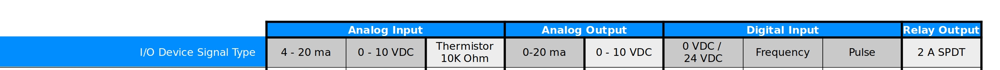
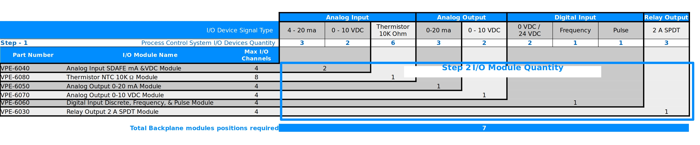
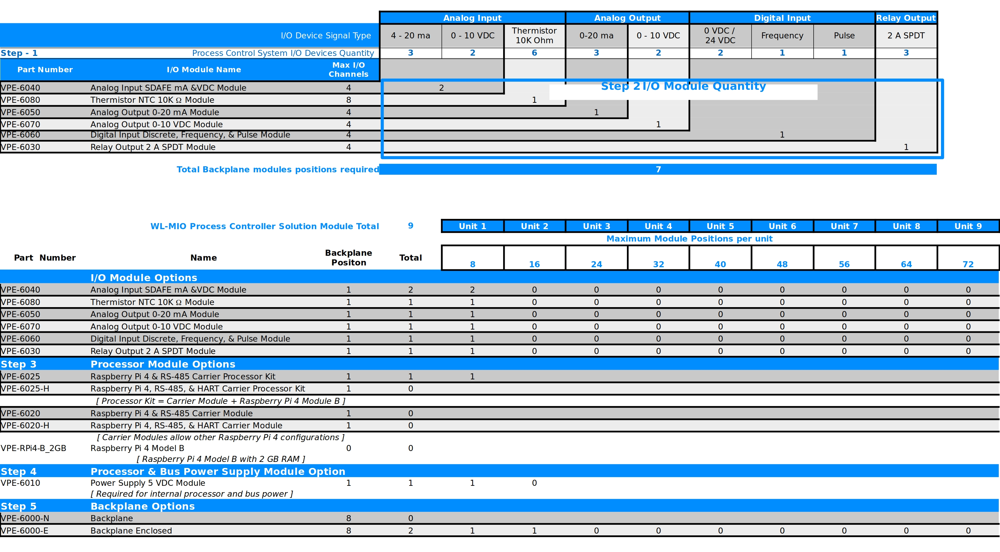

“How 2” configure a WL-MIO Process Controller hardware solution is described in this topic. Configuring the hardware solution completes one of the many design elements in an automated process control system.
Determine the quantity and electrical signal type interfaces to the connected I/O devices desired to be controlled by a WL-MIO Process Controller solution.
WL-MIO Process Controller supports these electrical signal types:

TIP: Do not forget to plan spare I/O device signal types for process control system changes.
Calculate the quantity of WL-MIO I/O modules needed to support the total quantity of I/O device signal types.
For example: WL-MIO’s Analog Input SDAFE mA &VDC Module, VPE-6040, supports four I/O device channels. If six Analog Input 4-20 ma I/O device signal types are desired to be controlled, two Analog Input SDAFE mA &VDC Module, VPE-6040, are required.
The following illustration shows the relationship of the I/O device signal type associated with the specific WL-MIO I/O Module and the quantity of I/O device channels supported.
Determine processor module options
Multiple options exist for processor modules. Kit part numbers, VPE-6025 (RS-485) and VPE-6025-H (RS-485 and HART) combine the WL-MIO Carrier Module (processor module interface adapter) with the Raspberry Pi 4 module. WL-MIO Carrier Module without Raspberry PI 4 modules, VPE-6020 (RS-485) and VPE-6020-H (RS-485 and HART) are available for other configurations of the Raspberry Pi 4 module.
A minimum of 1 WL-MIO Processor Module is required. Additional WL-MIO Processor’s may be added if the control software programming supports.
Determine processor and bus power supply options
Raspberry Pi 4 modules and WL-MIO I/O modules use 5 VDC power to operate. WL-MIO’s Power Supply 5 VDC Module, VPE-6010, integrates this function into the WL-MIO Process Controller solution and interfaces to an external 24 VDC power supply. This function for an integrated internal power supply is optional.
Multiple WL-MIO Power Supply 5 VDC Modules are supported to improve continuity of operations.
Calculate backplane quantities
Two options for backplanes are offered.
Both options support up to 8 WL-MIO module positions. Calculation of the backplane quantities is determined by adding the following totals together:
| Step | Component | Total |
|---|---|---|
| Step 2 | I/O Modules | 7 (Determined by controlled I/O Devices) |
| Step 3 | Processor | 1 (Required) |
| Step 4 | Processor and Bus Power Supply | 1 (Integrated option selected) |
| Total Backplane Positions | 9 |
Based on a limit of 8 backplane module positions, 2 WL-MIO Backplanes (VPE-6000-N or VPE-6000-E) are required.
Illustrated below is a configuration view to demonstrate how the steps are integrated together to configure a WL-MIO Processor Controller solution.
 Back to Top